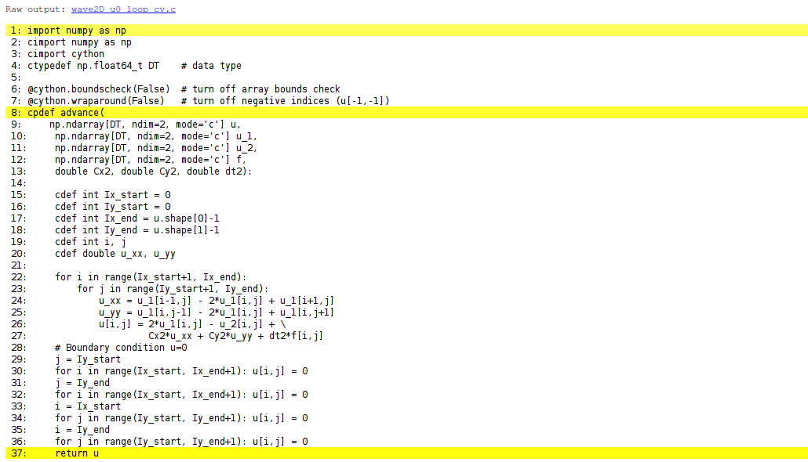

Let \( u_t \), \( u_{tt} \), \( u_x \), \( u_{xx} \) denote derivatives of \( u \) with
respect to the subscript, i.e., \( u_{tt} \) is a second-order time
derivative and \( u_x \) is a first-order space derivative. The
initial-boundary value problem implemented in the wave1D_dn_vc.py
code is
$$
\begin{align}
u_{tt} &= (q(x)u_x)_x + f(x,t),\quad &x\in (0,L),\ t\in (0,T]
\tag{1}\\
u(x,0) &= I(x),\quad &x\in [0,L]
\tag{2}\\
u_t(x,0) &= V(t),\quad &x\in [0,L]
\tag{3}\\
u(0,t) &= U_0(t)\hbox{ or } u_x(0,t)=0,\quad &t\in (0,T]
\tag{4}\\
u(L,t) &= U_L(t)\hbox{ or } u_x(L,t)=0,\quad &t\in (0,T]
\tag{5}
\end{align}
$$
We allow variable wave velocity \( c^2(x)=q(x) \), and Dirichlet or homogeneous
Neumann conditions at the boundaries.
The PDE is discretized by second-order finite differences in time and space, with arithmetic mean for the variable coefficient $$ \begin{equation} [D_tD_t u = \varrho^{-1}D_x\overline{q}^xD_x u + f]^n_i \tp \tag{6} \end{equation} $$ The Neumann boundary conditions are discretized by $$ [D_{2x}u]^n_i=0,$$ at a boundary point \( i \). The details of how the numerical scheme is worked out are described in in the document Finite difference methods for wave motion [1].
The general initial-boundary value problem
(1)-(5)
solved by finite difference methods can be implemented in
the following solver function (taken from the
file wave1D_dn_vc.py).
This function builds on
simpler versions described in
in
the document Finite difference methods for wave motion
[1].
There are several quite advanced
constructs that will be commented upon later.
def solver(I, V, f, c, U_0, U_L, L, dt, C, T,
user_action=None, version='scalar',
stability_safety_factor=1.0):
"""Solve u_tt=(c^2*u_x)_x + f on (0,L)x(0,T]."""
Nt = int(round(T/dt))
t = np.linspace(0, Nt*dt, Nt+1) # Mesh points in time
# Find max(c) using a fake mesh and adapt dx to C and dt
if isinstance(c, (float,int)):
c_max = c
elif callable(c):
c_max = max([c(x_) for x_ in linspace(0, L, 101)])
dx = dt*c_max/(stability_safety_factor*C)
Nx = int(round(L/dx))
x = np.linspace(0, L, Nx+1) # Mesh points in space
# Treat c(x) as array
if isinstance(c, (float,int)):
c = np.zeros(x.shape) + c
elif callable(c):
# Call c(x) and fill array c
c_ = np.zeros(x.shape)
for i in range(Nx+1):
c_[i] = c(x[i])
c = c_
q = c**2
C2 = (dt/dx)**2; dt2 = dt*dt # Help variables in the scheme
# Wrap user-given f, I, V, U_0, U_L if None or 0
if f is None or f == 0:
f = (lambda x, t: 0) if version == 'scalar' else \
lambda x, t: np.zeros(x.shape)
if I is None or I == 0:
I = (lambda x: 0) if version == 'scalar' else \
lambda x: np.zeros(x.shape)
if V is None or V == 0:
V = (lambda x: 0) if version == 'scalar' else \
lambda x: np.zeros(x.shape)
if U_0 is not None:
if isinstance(U_0, (float,int)) and U_0 == 0:
U_0 = lambda t: 0
if U_L is not None:
if isinstance(U_L, (float,int)) and U_L == 0:
U_L = lambda t: 0
# Make hash of all input data
import hashlib, inspect
data = inspect.getsource(I) + '_' + inspect.getsource(V) + \
'_' + inspect.getsource(f) + '_' + str(c) + '_' + \
('None' if U_0 is None else inspect.getsource(U_0)) + \
('None' if U_L is None else inspect.getsource(U_L)) + \
'_' + str(L) + str(dt) + '_' + str(C) + '_' + str(T) + \
'_' + str(stability_safety_factor)
hashed_input = hashlib.sha1(data).hexdigest()
if os.path.isfile('.' + hashed_input + '_archive.npz'):
# Simulation is already run
return -1, hashed_input
u = np.zeros(Nx+1) # Solution array at new time level
u_1 = np.zeros(Nx+1) # Solution at 1 time level back
u_2 = np.zeros(Nx+1) # Solution at 2 time levels back
import time; t0 = time.clock() # CPU time measurement
Ix = range(0, Nx+1)
It = range(0, Nt+1)
# Load initial condition into u_1
for i in range(0,Nx+1):
u_1[i] = I(x[i])
if user_action is not None:
user_action(u_1, x, t, 0)
# Special formula for the first step
for i in Ix[1:-1]:
u[i] = u_1[i] + dt*V(x[i]) + \
0.5*C2*(0.5*(q[i] + q[i+1])*(u_1[i+1] - u_1[i]) - \
0.5*(q[i] + q[i-1])*(u_1[i] - u_1[i-1])) + \
0.5*dt2*f(x[i], t[0])
i = Ix[0]
if U_0 is None:
# Set boundary values (x=0: i-1 -> i+1 since u[i-1]=u[i+1]
# when du/dn = 0, on x=L: i+1 -> i-1 since u[i+1]=u[i-1])
ip1 = i+1
im1 = ip1 # i-1 -> i+1
u[i] = u_1[i] + dt*V(x[i]) + \
0.5*C2*(0.5*(q[i] + q[ip1])*(u_1[ip1] - u_1[i]) - \
0.5*(q[i] + q[im1])*(u_1[i] - u_1[im1])) + \
0.5*dt2*f(x[i], t[0])
else:
u[i] = U_0(dt)
i = Ix[-1]
if U_L is None:
im1 = i-1
ip1 = im1 # i+1 -> i-1
u[i] = u_1[i] + dt*V(x[i]) + \
0.5*C2*(0.5*(q[i] + q[ip1])*(u_1[ip1] - u_1[i]) - \
0.5*(q[i] + q[im1])*(u_1[i] - u_1[im1])) + \
0.5*dt2*f(x[i], t[0])
else:
u[i] = U_L(dt)
if user_action is not None:
user_action(u, x, t, 1)
# Update data structures for next step
#u_2[:] = u_1; u_1[:] = u # safe, but slower
u_2, u_1, u = u_1, u, u_2
for n in It[1:-1]:
# Update all inner points
if version == 'scalar':
for i in Ix[1:-1]:
u[i] = - u_2[i] + 2*u_1[i] + \
C2*(0.5*(q[i] + q[i+1])*(u_1[i+1] - u_1[i]) - \
0.5*(q[i] + q[i-1])*(u_1[i] - u_1[i-1])) + \
dt2*f(x[i], t[n])
elif version == 'vectorized':
u[1:-1] = - u_2[1:-1] + 2*u_1[1:-1] + \
C2*(0.5*(q[1:-1] + q[2:])*(u_1[2:] - u_1[1:-1]) -
0.5*(q[1:-1] + q[:-2])*(u_1[1:-1] - u_1[:-2])) + \
dt2*f(x[1:-1], t[n])
else:
raise ValueError('version=%s' % version)
# Insert boundary conditions
i = Ix[0]
if U_0 is None:
# Set boundary values
# x=0: i-1 -> i+1 since u[i-1]=u[i+1] when du/dn=0
# x=L: i+1 -> i-1 since u[i+1]=u[i-1] when du/dn=0
ip1 = i+1
im1 = ip1
u[i] = - u_2[i] + 2*u_1[i] + \
C2*(0.5*(q[i] + q[ip1])*(u_1[ip1] - u_1[i]) - \
0.5*(q[i] + q[im1])*(u_1[i] - u_1[im1])) + \
dt2*f(x[i], t[n])
else:
u[i] = U_0(t[n+1])
i = Ix[-1]
if U_L is None:
im1 = i-1
ip1 = im1
u[i] = - u_2[i] + 2*u_1[i] + \
C2*(0.5*(q[i] + q[ip1])*(u_1[ip1] - u_1[i]) - \
0.5*(q[i] + q[im1])*(u_1[i] - u_1[im1])) + \
dt2*f(x[i], t[n])
else:
u[i] = U_L(t[n+1])
if user_action is not None:
if user_action(u, x, t, n+1):
break
# Update data structures for next step
#u_2[:] = u_1; u_1[:] = u # safe, but slower
u_2, u_1, u = u_1, u, u_2
# Important to correct the mathematically wrong u=u_2 above
# before returning u
u = u_1
cpu_time = t0 - time.clock()
return cpu_time, hashed_input
Or maybe copy section by section...?
Numerical simulations produce large arrays as results and the software
needs to store these arrays on disk. Several methods are available
in Python. We recommend to use tailored solutions for large arrays and
not standard file storage tools such as pickle (cPickle for speed
in Python version 2) and shelve.
savez to store arrays in files
The numpy.storez function can store a set of arrays to a named
file in a zip archive. An associated function
numpy.load can be used to read the file later.
Basically, we call numpy.storez(filename, **kwargs), where
kwargs is a dictionary containing array names as keys and
the corresponding array objects as values. Very often, the
solution at a time point is given a natural name where the
name of the variable and the time level counter are combined, e.g.,
u11 or v39. Suppose n is the time level counter and we have
two solution arrays, u and v, that we want to save to a zip
archive. The appropriate code is
import numpy as np
u_name = 'u%04d' % n # array name
v_name = 'v%04d' % n # array name
kwargs = {u_name: u, v_name: v} # keyword args for savez
fname = '.mydata%04d.dat' % n
np.savez(fname, **kwargs)
if n == 0: # store x once
np.savez('.mydata_x.dat', x=x)
Since the name of the array must be given as a keyword argument
to savez, and the name must be constructed as shown, it becomes
a little tricky to do the call, but with a dictionary kwargs and
**kwargs, which sends each key-value pair as individual keyword
arguments, the task gets accomplished.
Each separate call to np.savez creates a new file (zip archive) with
extension .npz. It is very convenient if collect all results in
one archive instead. This can be done by merging all the individual
.npz files into a single zip archive:
def merge_zip_archives(individual_archives, archive_name):
"""
Merge individual zip archives made with numpy.savez into
one archive with name archive_name.
The individual archives can be given as a list of names
or as a Unix wild chard filename expression for glob.glob.
The result of this function is that all the individual
archives are deleted and the new single archive made.
"""
import zipfile
archive = zipfile.ZipFile(
archive_name, 'w', zipfile.ZIP_DEFLATED,
allowZip64=True)
if isinstance(individual_archives, (list,tuple)):
filenames = individual_archives
elif isinstance(individual_archives, str):
filenames = glob.glob(individual_archives)
# Open each archive and write to the common archive
for filename in filenames:
f = zipfile.ZipFile(filename, 'r',
zipfile.ZIP_DEFLATED)
for name in f.namelist():
data = f.open(name, 'r')
# Save under name without .npy
archive.writestr(name[:-4], data.read())
f.close()
os.remove(filename)
archive.close()
Here we remark that savez automatically
adds the .npz extension to the names of
the arrays we store. We do not want this extension in the final
archive.
Archives created by savez or the merged archive we describe
above with name of the form myarchive.npz
can be conveniently read by the numpy.load function:
import numpy as np
array_names = np.load(`myarchive.npz`)
for array_name in array_names:
# array_names[array_name] is the array itself
# e.g. plot(array_names['t'], array_names[array_name])
joblib to store arrays in files
The Python package joblib has nice functionality for efficient storage
of arrays on disk. The following class applies this functionality so that
one can save an array, or in fact any Python data structure (e.g., a
dictionary of arrays), to disk under a certain name. Later, we can
retrieve the object from its name. The name of the directory under which
the arrays are stored by joblib can be given by the user.
class Storage(object):
"""
Store large data structures (e.g. numpy arrays) efficiently
using joblib.
Use:
>>> from Storage import Storage
>>> storage = Storage(cachedir='tmp_u01', verbose=1)
>>> import numpy as np
>>> a = np.linspace(0, 1, 100000) # large array
>>> b = np.linspace(0, 1, 100000) # large array
>>> storage.save('a', a)
>>> storage.save('b', b)
>>> # later
>>> a = storage.retrieve('a')
>>> b = storage.retrieve('b')
"""
def __init__(self, cachedir='tmp', verbose=1):
"""
Parameters
----------
cachedir: str
Name of directory where objects are stored in files.
verbose: bool, int
Let joblib and this class speak when storing files
to disk.
"""
import joblib
self.memory = joblib.Memory(cachedir=cachedir,
verbose=verbose)
self.verbose = verbose
self.retrieve = self.memory.cache(
self.retrieve, ignore=['data'])
self.save = self.retrieve
def retrieve(self, name, data=None):
if self.verbose > 0:
print 'joblib save of', name
return data
The retrive and save functions, which do the work, seem quite
magic. The idea is that joblib looks at the name parameter
and saves the return value data to disk if the name parameter
has not been used in a previous call. Otherwise, if name is
already registered, joblib fetches the data object from
file and returns it (this is example of a memoize function,
see the document Scaling of differential equations [2] for a brief explanation).
The user of array storage techniques like those outlined in
the sections Using joblib to store arrays in files and
Using savez to store arrays in files demand the user to assign
a name for the file(s) or directory where the solution is to be
stored. Ideally, this name should reflect parameters in the problem
such that one can recognize an already run simulation. One
technique is to make a hash string out of the input data.
A hash string is a 40-character long hexadecimal string that uniquely
reflects another potentially much longer string. (You may be used
to hash strings from the Git version control system: every committed
version of the files in Git is recognized by a hash string.)
Suppose you have some input data in the form of functions,
numpy arrays, and other objects. To turn these input data
into a string we may grab the source code of the functions,
use a very efficient hash method for potentially large arrays,
and simply convert all other objects via str to a string
representation. The final string, merging all input data,
is then converted to an SHA1 hash string such that we represent
the input with a 40-character long string.
def myfunction(func1, func2, array1, array2, obj1, obj2):
# Convert arguments to hash
import inspect, joblib, hashlib
data = (inspect.getsource(func1),
inspect.getsource(func2),
joblib.hash(array1),
joblib.hash(array2),
str(obj1),
str(obj2))
hash_input = hashlib.sha1(data).hexdigest()
It is wise to use joblib.hash and not try to do a
str(array1), since that string can be very long, and
joblib.hash is more efficient than hashlib to turn
these data into a hash.
The idea of turning a function object into a string via its source code may look smart, but is not a completely reliable solution. Suppose we have some function
x0 = 0.1
f = lambda x: 0 of x <= x0 else 1
The source code will be f = lambda x: 0 of x <= x0 else 1, so if the
calling code changes the value of x0 (which f remembers - it is
a closure), the source remains unchanged, the hash is the same,
and the change in input data is unnoticed. Consequently, the technique
above must be used with care. The user can always just remove the
stored files in disk and thereby force a recomputation (provided the software
applies to hash to test if a zip archive or joblib subdirectory
exists and if so avoids recomputation).
We use numpy.storez to store the solution at each time level on disk.
Such actions must be
taken care of outside the solver function, more precisely in the
user_action function that is called at every time level.
We have in the wave1D_dn_vc.py
code implemented the user_action
callback function as a class PlotAndStoreSolution with a
__call__(self, x, t, t, n) method for the user_action function.
Basically, __call__ stores and plots the solution.
The storage makes use of the numpy.savez function for saving
a set of arrays to a zip archive.
Here, in this callback function, we want to save one array, u.
Since there will be many such arrays, we introduce the array names
'u%04d' % n and closely related filenames.
The usage of numpy.savez in __call__ goes like this:
from numpy import savez
name = 'u%04d' % n # array name
kwargs = {name: u} # keyword args for savez
fname = '.' + self.filename + '_' + name + '.dat'
self.t.append(t[n]) # store corresponding time value
savez(fname, **kwargs)
if n == 0: # store x once
savez('.' + self.filename + '_x.dat', x=x)
For example, if n is 10 and self.filename is tmp,
the above call to savez becomes
savez('.tmp_u0010.dat', u0010=u).
The actual filename becomes .tmp_u0010.dat.npz. The actual array
name becomes u0010.npy.
Each savez call results in a file, so after the simulation we have
one file per time level. Each file produced by savez is a zip archive.
It makes sense to merge all the files into one. This is done in
the close_file method in the PlotAndStoreSolution class. The code goes as
follows.
class PlotAndStoreSolution:
...
def close_file(self, hashed_input):
"""
Merge all files from savez calls into one archive.
hashed_input is a string reflecting input data
for this simulation (made by solver).
"""
if self.filename is not None:
# Save all the time points where solutions are saved
savez('.' + self.filename + '_t.dat',
t=array(self.t, dtype=float))
# Merge all savez files to one zip archive
archive_name = '.' + hashed_input + '_archive.npz'
filenames = glob.glob('.' + self.filename + '*.dat.npz')
merge_zip_archives(filenames, archive_name)
We use various ZipFile functionality to extract the content of the
individual files (each with name filename) and write it to the
merged archive (archive). There is only one
array in each individual file (filename) so strictly speaking, there
is no need for the loop for name in f.namelist() (as f.namelist()
returns a list of length 1). However, in other applications where
we compute more arrays at each time level, savez will store all
these and then there is need for iterating over f.namelist().
Instead of merging the archives written by savez we could make
an alternative implementation that writes all our arrays into
one archive. This is the subject of Exercise 1: Make an improved numpy.savez function.
The hashed_input argument, used to name the
resulting archive file with all solutions, is supposed to be a
hash reflecting all import parameters in the problem such that this
simulation has a unique name.
The hashed_input string is made in the solver function, using the hashlib
and inspect modules, based on the arguments to solver:
# Make hash of all input data
import hashlib, inspect
data = inspect.getsource(I) + '_' + inspect.getsource(V) + \
'_' + inspect.getsource(f) + '_' + str(c) + '_' + \
('None' if U_0 is None else inspect.getsource(U_0)) + \
('None' if U_L is None else inspect.getsource(U_L)) + \
'_' + str(L) + str(dt) + '_' + str(C) + '_' + str(T) + \
'_' + str(stability_safety_factor)
hashed_input = hashlib.sha1(data).hexdigest()
NOTE: All this is now explained!
To get the source code of a function f as a string,
we use inspect.getsource(f). All input, functions as
well as variables, is then merged
to a string data, and then hashlib.sha1 makes a unique, much shorter
(40 characters long),
fixed-length string out of data that we can use in the archive filename.
Note that the construction of the data string is not fool proof:
if, e.g., I is a formula with parameters and the parameters change,
the source code is still the same and data and hence the hash remains
unaltered. The implementation must therefore be used with care!
If the archive file whose name is based on hashed_input already
exists, the simulation with the current set of parameters has been
done before and one can avoid redoing the work. The solver function
returns the CPU time and hashed_input, and a negative CPU time means
that no simulation was run. In that case we should not call
the close_file method above (otherwise we overwrite the archive with
just the self.t array). The typical usage goes like
action = PlotAndStoreSolution(...)
dt = (L/Nx)/C # choose the stability limit with given Nx
cpu, hashed_input = solver(
I=lambda x: ...,
V=0, f=0, c=1, U_0=lambda t: 0, U_L=None, L=1,
dt=dt, C=C, T=T,
user_action=action, version='vectorized',
stability_safety_factor=1)
action.make_movie_file()
if cpu > 0: # did we generate new data?
action.close_file(hashed_input)
Exact solutions of the numerical equations are always attractive for verification purposes since the software should reproduce such solutions to machine precision. With Dirichlet boundary conditions we can construct a function that is linear in \( t \) and quadratic in \( x \) that is an exact solution of the scheme, while with Neumann conditions are left with testing just a constant solution (see comments in in the document Finite difference methods for wave motion [1]).
A more general method for verification is to check the convergence rates.
Do convergence rates here! It is general...
Many who knows about class programming prefer to organize their software in terms of classes. We can easily port our function-based code in ... to a class version.
We will create a class Problem to hold the physical parameters of the
problem and a class Solver to hold the numerical parameters and
the solver function. In addition, it is convenient to collect the
arrays that describe the mesh in a special Mesh class and make
a class Function for a mesh function (mesh point values and its mesh).
The Mesh class can be made valid for a space-time mesh in any number
of space dimensions. To make versatile, the constructor accepts
either a tuple/list of number of cells in each spatial dimension or
a tuple/list of cell spacings. In addition, we need the size of the
hypercube mesh as a tuple/list of 2-tuples with lower and upper limits
of the mesh coordinates in each direction. For 1D meshes it is more
natural to just write the number of cells or the cell size and not
wrap it in a list. We also need the time
interval from t0 to T. Giving no spatial discretization information
implies a time mesh only, and vice versa. The Mesh class with
documentation and a doc test should now be self-explanatory:
import numpy as np
class Mesh(object):
"""
Holds data structures for a uniform mesh on a hypercube in
space, plus a uniform mesh in time.
======== ==================================================
Argument Explanation
======== ==================================================
L List of 2-lists of min and max coordinates
in each spatial direction.
T Final time in time mesh.
Nt Number of cells in time mesh.
dt Time step. Either Nt or dt must be given.
N List of number of cells in the spatial directions.
d List of cell sizes in the spatial directions.
Either N or d must be given.
======== ==================================================
Users can access all the parameters mentioned above, plus
``x[i]`` and ``t`` for the coordinates in direction ``i``
and the time coordinates, respectively.
Examples:
>>> from UniformFDMesh import Mesh
>>>
>>> # Simple space mesh
>>> m = Mesh(L=[0,1], N=4)
>>> print m.dump()
space: [0,1] N=4 d=0.25
>>>
>>> # Simple time mesh
>>> m = Mesh(T=4, dt=0.5)
>>> print m.dump()
time: [0,4] Nt=8 dt=0.5
>>>
>>> # 2D space mesh
>>> m = Mesh(L=[[0,1], [-1,1]], d=[0.5, 1])
>>> print m.dump()
space: [0,1]x[-1,1] N=2x2 d=0.5,1
>>>
>>> # 2D space mesh and time mesh
>>> m = Mesh(L=[[0,1], [-1,1]], d=[0.5, 1], Nt=10, T=3)
>>> print m.dump()
space: [0,1]x[-1,1] N=2x2 d=0.5,1 time: [0,3] Nt=10 dt=0.3
"""
def __init__(self,
L=None, T=None, t0=0,
N=None, d=None,
Nt=None, dt=None):
if N is None and d is None:
# No spatial mesh
if Nt is None and dt is None:
raise ValueError(
'Mesh constructor: either Nt or dt must be given')
if T is None:
raise ValueError(
'Mesh constructor: T must be given')
if Nt is None and dt is None:
if N is None and d is None:
raise ValueError(
'Mesh constructor: either N or d must be given')
if L is None:
raise ValueError(
'Mesh constructor: L must be given')
# Allow 1D interface without nested lists with one element
if L is not None and isinstance(L[0], (float,int)):
# Only an interval was given
L = [L]
if N is not None and isinstance(N, (float,int)):
N = [N]
if d is not None and isinstance(d, (float,int)):
d = [d]
# Set all attributes to None
self.x = None
self.t = None
self.Nt = None
self.dt = None
self.N = None
self.d = None
self.t0 = t0
if N is None and d is not None and L is not None:
self.L = L
if len(d) != len(L):
raise ValueError(
'd has different size (no of space dim.) from '
'L: %d vs %d', len(d), len(L))
self.d = d
self.N = [int(round(float(self.L[i][1] -
self.L[i][0])/d[i]))
for i in range(len(d))]
if d is None and N is not None and L is not None:
self.L = L
if len(N) != len(L):
raise ValueError(
'N has different size (no of space dim.) from '
'L: %d vs %d', len(N), len(L))
self.N = N
self.d = [float(self.L[i][1] - self.L[i][0])/N[i]
for i in range(len(N))]
if Nt is None and dt is not None and T is not None:
self.T = T
self.dt = dt
self.Nt = int(round(T/dt))
if dt is None and Nt is not None and T is not None:
self.T = T
self.Nt = Nt
self.dt = T/float(Nt)
if self.N is not None:
self.x = [np.linspace(
self.L[i][0], self.L[i][1], self.N[i]+1)
for i in range(len(self.L))]
if Nt is not None:
self.t = np.linspace(self.t0, self.T, self.Nt+1)
def get_num_space_dim(self):
return len(self.d) if self.d is not None else 0
def has_space(self):
return self.d is not None
def has_time(self):
return self.dt is not None
def dump(self):
s = ''
if self.has_space():
s += 'space: ' + \
'x'.join(['[%g,%g]' % (self.L[i][0], self.L[i][1])
for i in range(len(self.L))]) + ' N='
s += 'x'.join([str(Ni) for Ni in self.N]) + ' d='
s += ','.join([str(di) for di in self.d])
if self.has_space() and self.has_time():
s += ' '
if self.has_time():
s += 'time: ' + '[%g,%g]' % (self.t0, self.T) + \
' Nt=%g' % self.Nt + ' dt=%g' % self.dt
return s
Java programmers in particular are used to get/set functions in
classes to access internal data. In Python, we usually apply direct
access of the attribute, such as m.N[i] if m is a Mesh object.
A widely used convention is to do this as long as access to
an attribute does not require additional code. In that case, one
applies a property construction. The original interface remains
the same after a property is introduced (in contrast to Java), so
user will not notice a change to properties.
The only argument against direct attribute access in class Mesh
is that the attributes are read-only so we could avoid offering
a set function. Instead, we rely on the user that she does not
assign new values to the attributes.
A class Function is handy to hold a mesh and corresponding values for
a scalar or vector function over the mesh. Since we may have a
time or space mesh, or a combined time and space mesh, with one or
more components in the function, some if tests are needed for
allocating the right array sizes. To help the user, an indices
attribute with the name of the indices in the final array u
for the function values is made. The examples in the doc string
should explain the functionality.
class Function(object):
"""
A scalar or vector function over a mesh (of class Mesh).
========== ===================================================
Argument Explanation
========== ===================================================
mesh Class Mesh object: spatial and/or temporal mesh.
num_comp Number of components in function (1 for scalar).
space_only True if the function is defined on the space mesh
only (to save space). False if function has values
in space and time.
========== ===================================================
The indexing of ``u``, which holds the mesh point values of the
function, depends on whether we have a space and/or time mesh.
Examples:
>>> from UniformFDMesh import Mesh, Function
>>>
>>> # Simple space mesh
>>> m = Mesh(L=[0,1], N=4)
>>> print m.dump()
space: [0,1] N=4 d=0.25
>>> f = Function(m)
>>> f.indices
['x0']
>>> f.u.shape
(5,)
>>> f.u[4] # space point 4
0.0
>>>
>>> # Simple time mesh for two components
>>> m = Mesh(T=4, dt=0.5)
>>> print m.dump()
time: [0,4] Nt=8 dt=0.5
>>> f = Function(m, num_comp=2)
>>> f.indices
['time', 'component']
>>> f.u.shape
(9, 2)
>>> f.u[3,1] # time point 3, comp=1 (2nd comp.)
0.0
>>>
>>> # 2D space mesh
>>> m = Mesh(L=[[0,1], [-1,1]], d=[0.5, 1])
>>> print m.dump()
space: [0,1]x[-1,1] N=2x2 d=0.5,1
>>> f = Function(m)
>>> f.indices
['x0', 'x1']
>>> f.u.shape
(3, 3)
>>> f.u[1,2] # space point (1,2)
0.0
>>>
>>> # 2D space mesh and time mesh
>>> m = Mesh(L=[[0,1],[-1,1]], d=[0.5,1], Nt=10, T=3)
>>> print m.dump()
space: [0,1]x[-1,1] N=2x2 d=0.5,1 time: [0,3] Nt=10 dt=0.3
>>> f = Function(m, num_comp=2, space_only=False)
>>> f.indices
['time', 'x0', 'x1', 'component']
>>> f.u.shape
(11, 3, 3, 2)
>>> f.u[2,1,2,0] # time step 2, space point (1,2), comp=0
0.0
>>> # Function with space data only
>>> f = Function(m, num_comp=1, space_only=True)
>>> f.indices
['x0', 'x1']
>>> f.u.shape
(3, 3)
>>> f.u[1,2] # space point (1,2)
0.0
"""
def __init__(self, mesh, num_comp=1, space_only=True):
self.mesh = mesh
self.num_comp = num_comp
self.indices = []
# Create array(s) to store mesh point values
if (self.mesh.has_space() and not self.mesh.has_time()) or \
(self.mesh.has_space() and self.mesh.has_time() and \
space_only):
# Space mesh only
if num_comp == 1:
self.u = np.zeros(
[self.mesh.N[i] + 1
for i in range(len(self.mesh.N))])
self.indices = [
'x'+str(i) for i in range(len(self.mesh.N))]
else:
self.u = np.zeros(
[self.mesh.N[i] + 1
for i in range(len(self.mesh.N))] +
[num_comp])
self.indices = [
'x'+str(i)
for i in range(len(self.mesh.N))] +\
['component']
if not self.mesh.has_space() and self.mesh.has_time():
# Time mesh only
if num_comp == 1:
self.u = np.zeros(self.mesh.Nt+1)
self.indices = ['time']
else:
# Need num_comp entries per time step
self.u = np.zeros((self.mesh.Nt+1, num_comp))
self.indices = ['time', 'component']
if self.mesh.has_space() and self.mesh.has_time() \
and not space_only:
# Space-time mesh
size = [self.mesh.Nt+1] + \
[self.mesh.N[i]+1
for i in range(len(self.mesh.N))]
if num_comp > 1:
self.indices = ['time'] + \
['x'+str(i)
for i in range(len(self.mesh.N))] +\
['component']
size += [num_comp]
else:
self.indices = ['time'] + ['x'+str(i)
for i in range(len(self.mesh.N))]
self.u = np.zeros(size)
With the Mesh and Function classes in place, we can rewrite
the solver function, but we put it as a method in class Solver:
We now consider the wave2D_u0.py
code for solving the 2D linear wave equation with constant wave
velocity and homogeneous Dirichlet boundary conditions \( u=0 \).
This code contains a solver function, which calls and advance_*
function to advance the numerical scheme one level forward in time.
The function advance_scalar applies standard Python loops to implement
the scheme, while advance_vectorized performs corresponding
vectorized arithmetics with array slices. The statements of this
solver are explained in
in
the document Finite difference methods for wave motion
[1].
Although vectorization can bring down the CPU time dramatically compared with scalar code, there is still some factor 5-10 to win in these types of applications by implementing the finite difference scheme in compiled code, typically in Fortran, C, or C++. This can quite easily be done by adding a little extra code to our program. Cython is an extension of Python that offers the easiest way to nail our Python loops in the scalar code down to machine code and achieve the efficiency of C.
Cython can be viewed as an extended Python language where variables are
declared with types and where functions are marked to be implemented in C.
Migrating Python code to Cython is done by copying the desired code
segments to functions (or classes) and placing them in one or more separate
files with extension .pyx.
Our starting point is the plain advance_scalar function for a scalar
implementation of the updating algorithm for new values
\( u^{n+1}_{i,j} \):
def advance_scalar(u, u_1, u_2, f, x, y, t, n, Cx2, Cy2, dt2,
V=None, step1=False):
Ix = range(0, u.shape[0]); Iy = range(0, u.shape[1])
if step1:
dt = sqrt(dt2) # save
Cx2 = 0.5*Cx2; Cy2 = 0.5*Cy2; dt2 = 0.5*dt2 # redefine
D1 = 1; D2 = 0
else:
D1 = 2; D2 = 1
for i in Ix[1:-1]:
for j in Iy[1:-1]:
u_xx = u_1[i-1,j] - 2*u_1[i,j] + u_1[i+1,j]
u_yy = u_1[i,j-1] - 2*u_1[i,j] + u_1[i,j+1]
u[i,j] = D1*u_1[i,j] - D2*u_2[i,j] + \
Cx2*u_xx + Cy2*u_yy + dt2*f(x[i], y[j], t[n])
if step1:
u[i,j] += dt*V(x[i], y[j])
# Boundary condition u=0
j = Iy[0]
for i in Ix: u[i,j] = 0
j = Iy[-1]
for i in Ix: u[i,j] = 0
i = Ix[0]
for j in Iy: u[i,j] = 0
i = Ix[-1]
for j in Iy: u[i,j] = 0
return u
We simply take
a copy of this function and put it in a file wave2D_u0_loop_cy.pyx.
The relevant Cython implementation arises from declaring variables with
types and adding some important annotations to speed up array
computing in Cython. Let us first list the complete code in the
.pyx file:
import numpy as np
cimport numpy as np
cimport cython
ctypedef np.float64_t DT # data type
@cython.boundscheck(False) # turn off array bounds check
@cython.wraparound(False) # turn off negative indices (u[-1,-1])
cpdef advance(
np.ndarray[DT, ndim=2, mode='c'] u,
np.ndarray[DT, ndim=2, mode='c'] u_1,
np.ndarray[DT, ndim=2, mode='c'] u_2,
np.ndarray[DT, ndim=2, mode='c'] f,
double Cx2, double Cy2, double dt2):
cdef:
int Ix_start = 0
int Iy_start = 0
int Ix_end = u.shape[0]-1
int Iy_end = u.shape[1]-1
int i, j
double u_xx, u_yy
for i in range(Ix_start+1, Ix_end):
for j in range(Iy_start+1, Iy_end):
u_xx = u_1[i-1,j] - 2*u_1[i,j] + u_1[i+1,j]
u_yy = u_1[i,j-1] - 2*u_1[i,j] + u_1[i,j+1]
u[i,j] = 2*u_1[i,j] - u_2[i,j] + \
Cx2*u_xx + Cy2*u_yy + dt2*f[i,j]
# Boundary condition u=0
j = Iy_start
for i in range(Ix_start, Ix_end+1): u[i,j] = 0
j = Iy_end
for i in range(Ix_start, Ix_end+1): u[i,j] = 0
i = Ix_start
for j in range(Iy_start, Iy_end+1): u[i,j] = 0
i = Ix_end
for j in range(Iy_start, Iy_end+1): u[i,j] = 0
return u
This example may act as a recipe on how to transform array-intensive code with loops into Cython.
double v in the argument list instead of just v, and cdef double v
for a variable v in the body of the function.
A Python float object is declared as double for
translation to C by Cython, while an int object is
declared by int.np.ndarray,DT through ctypedef np.float64_t DT
(instead of DT we could use the full name of the
data type: np.float64_t, which is a Cython-defined type),ndim=2 and ndim=1,mode='c').cpdef are translated to C but are also
accessible from Python.numpy import we also need a special
Cython import of numpy: cimport numpy as np, to appear after
the standard import.@cython.boundscheck(False)
above the function header.@cython.wraparound(False) right above
the function header.Ix and Iy in the scalar code cannot be
successfully translated to C. One reason is that constructions like
Ix[1:-1] involve negative indices, and these are now turned
off. Another reason is that Cython loops must take the form for i
in xrange or for i in range for being translated into efficient
C loops. We have therefore introduced Ix_start as Ix[0]
and Ix_end as Ix[-1] to hold the start and end of the values
of index \( i \). Similar variables are introduced for the \( j \) index.
A loop for i in Ix is with these new variables written as
for i in range(Ix_start, Ix_end+1).
We have used the syntax np.ndarray[DT, ndim=2, mode='c'] to declare
numpy arrays in Cython. There is a simpler, alternative syntax, employing
typed memory views,
where the declaration looks like double [:,:].
However, the full support for this functionality is not yet ready, and
in this text we use the full array declaration syntax.
Cython can visually explain how successfully it translated a code from Python to C. The command
Terminal> cython -a wave2D_u0_loop_cy.pyx
produces an HTML file wave2D_u0_loop_cy.html, which can be loaded into
a web browser to illustrate which lines of the code that have been
translated to C. Figure 1 shows
the illustrated code. Yellow lines indicate the lines that Cython did not manage
to translate to efficient C code and that remain in Python.
For the present code we see that Cython is able to translate all the
loops with array computing to C, which is our primary goal.
Figure 1: Visual illustration of Cython's ability to translate Python to C.

You can also inspect the generated C code directly, as it appears in
the file wave2D_u0_loop_cy.c. Nevertheless, understanding this C
code requires some familiarity with writing Python extension modules
in C by hand. Deep down in the file we can see in detail how the
compute-intensive statements have been translated into some complex C
code that is quite different from what a human would write (at
least if a direct correspondence to the mathematical notation was
intended).
Cython code must be translated to C, compiled, and linked to form what
is known in the Python world as a C extension module.
This is usually done by making a setup.py script, which
is the standard way of building and installing Python software.
For an extension module arising from Cython code, the following
setup.py script is all we need to build and install the module:
from distutils.core import setup
from distutils.extension import Extension
from Cython.Distutils import build_ext
cymodule = 'wave2D_u0_loop_cy'
setup(
name=cymodule
ext_modules=[Extension(cymodule, [cymodule + '.pyx'],)],
cmdclass={'build_ext': build_ext},
)
We run the script by
Terminal> python setup.py build_ext --inplace
The --inplace option makes the extension module available in the
current directory as the file wave2D_u0_loop_cy.so. This
file acts as a normal Python module that can be imported and inspected:
>>> import wave2D_u0_loop_cy
>>> dir(wave2D_u0_loop_cy)
['__builtins__', '__doc__', '__file__', '__name__',
'__package__', '__test__', 'advance', 'np']
The important output from the dir function is our Cython function
advance (the module also features the imported numpy module under
the name np as well as many standard Python objects with double
underscores in their names).
The setup.py file makes use of the distutils package in Python
and Cython's extension of this package.
These tools know how Python was built on the computer and will
use compatible compiler(s) and options when building other code
in Cython, C, or C++. Quite some experience with building large
program systems is needed to do the build process manually, so using
a setup.py script is strongly recommended.
When there is no need to link the C code with special libraries, Cython offers a shortcut for generating and importing the extension module:
import pyximport; pyximport.install()
This makes the setup.py script redundant. However, in the wave2D_u0.py
code we do not use pyximport and require an explicit build process
of this and many other modules.
The wave2D_u0_loop_cy
module contains our advance function, which we now may call from
the Python program for the wave equation:
import wave2D_u0_loop_cy
advance = wave2D_u0_loop_cy.advance
...
for n in It[1:-1: # time loop
f_a[:,:] = f(xv, yv, t[n]) # precompute, size as u
u = advance(u, u_1, u_2, f_a, x, y, t, Cx2, Cy2, dt2)
For a mesh consisting of \( 120\times 120 \) cells, the scalar Python code require 1370 CPU time units, the vectorized version requires 5.5, while the Cython version requires only 1! For a smaller mesh with \( 60\times 60 \) cells Cython is about 1000 times faster than the scalar Python code, and the vectorized version is about 6 times slower than the Cython version.
Instead of relying on Cython's (excellent) ability to translate Python to C,
we can invoke a compiled language directly and write the loops ourselves.
Let us start with Fortran 77, because this is a language with more
convenient array handling than C (or plain C++). Or more precisely,
we can with ease program with the same multi-dimensional indices
in the Fortran code as in the numpy
arrays in the Python code, while in C these arrays are
one-dimensional and requires us to reduce multi-dimensional indices
to a single index.
We write a Fortran subroutine advance in a file
wave2D_u0_loop_f77.f
for implementing the updating formula
\eqref{wave:2D3D:impl1:2Du0:ueq:discrete} and setting the solution to zero
at the boundaries:
subroutine advance(u, u_1, u_2, f, Cx2, Cy2, dt2, Nx, Ny)
integer Nx, Ny
real*8 u(0:Nx,0:Ny), u_1(0:Nx,0:Ny), u_2(0:Nx,0:Ny)
real*8 f(0:Nx,0:Ny), Cx2, Cy2, dt2
integer i, j
real*8 u_xx, u_yy
Cf2py intent(in, out) u
C Scheme at interior points
do j = 1, Ny-1
do i = 1, Nx-1
u_xx = u_1(i-1,j) - 2*u_1(i,j) + u_1(i+1,j)
u_yy = u_1(i,j-1) - 2*u_1(i,j) + u_1(i,j+1)
u(i,j) = 2*u_1(i,j) - u_2(i,j) + Cx2*u_xx + Cy2*u_yy +
& dt2*f(i,j)
end do
end do
C Boundary conditions
j = 0
do i = 0, Nx
u(i,j) = 0
end do
j = Ny
do i = 0, Nx
u(i,j) = 0
end do
i = 0
do j = 0, Ny
u(i,j) = 0
end do
i = Nx
do j = 0, Ny
u(i,j) = 0
end do
return
end
This code is plain Fortran 77, except for the special Cf2py comment
line, which here specifies that u is both an input argument and
an object to be returned from the advance routine. Or more
precisely, Fortran is not able return an array from a function,
but we need a wrapper code in C for the Fortran subroutine to enable
calling it from Python, and from this wrapper code one can return u
to the calling Python code.
It is not strictly necessary to return u to the calling Python
code since the advance function will modify the elements of u,
but the convention in Python is to get all output from a function
as returned values. That is, the right way of calling the above
Fortran subroutine from Python is
u = advance(u, u_1, u_2, f, Cx2, Cy2, dt2)
The less encouraged style, which works and resembles the way the Fortran subroutine is called from Fortran, reads
advance(u, u_1, u_2, f, Cx2, Cy2, dt2)
The nice feature of writing loops in Fortran is that, without
much effort, the tool f2py
can produce a C extension module such that
we can call the Fortran version of advance from Python.
The necessary commands to run are
Terminal> f2py -m wave2D_u0_loop_f77 -h wave2D_u0_loop_f77.pyf \
--overwrite-signature wave2D_u0_loop_f77.f
Terminal> f2py -c wave2D_u0_loop_f77.pyf --build-dir build_f77 \
-DF2PY_REPORT_ON_ARRAY_COPY=1 wave2D_u0_loop_f77.f
The first command asks f2py to interpret the Fortran code and make
a Fortran 90
specification of the extension module in the file
wave2D_u0_loop_f77.pyf. The second command makes
f2py generate all necessary
wrapper code, compile our Fortran file and the wrapper code,
and finally build the module.
The build process takes place in the specified subdirectory build_f77
so that files can be inspected if something goes wrong.
The option -DF2PY_REPORT_ON_ARRAY_COPY=1 makes f2py write a message
for every array that is copied in the communication between Fortran and Python,
which is very useful for avoiding unnecessary array copying (see below).
The name of the module file
is wave2D_u0_loop_f77.so, and this file can be imported and inspected
as any other
Python module:
>>> import wave2D_u0_loop_f77
>>> dir(wave2D_u0_loop_f77)
['__doc__', '__file__', '__name__', '__package__',
'__version__', 'advance']
>>> print wave2D_u0_loop_f77.__doc__
This module 'wave2D_u0_loop_f77' is auto-generated with f2py....
Functions:
u = advance(u,u_1,u_2,f,cx2,cy2,dt2,
nx=(shape(u,0)-1),ny=(shape(u,1)-1))
Printing the doc strings of the module and its functions is
extremely important after having created a module with f2py.
The reason is that
f2py makes Python interfaces to the Fortran functions
that are different from how the functions are declared in
the Fortran code (!). The rationale for this behavior is that
f2py creates Pythonic interfaces such that Fortran routines
can be called in the same way as one calls Python functions.
Output data from Python functions is always returned
to the calling code, but this is technically impossible in Fortran.
Also, arrays in Python are passed to Python functions without
their dimensions because that information is packed with the array
data in the array objects. This is not possible in Fortran, however.
Therefore, f2py removes array dimensions from the argument list,
and f2py makes it possible to
return objects back to Python.
Let us follow the advice of examining the doc strings
and take a close look at
the documentation f2py has generated for our Fortran advance
subroutine:
>>> print wave2D_u0_loop_f77.advance.__doc__
This module 'wave2D_u0_loop_f77' is auto-generated with f2py
Functions:
u = advance(u,u_1,u_2,f,cx2,cy2,dt2,
nx=(shape(u,0)-1),ny=(shape(u,1)-1))
.
advance - Function signature:
u = advance(u,u_1,u_2,f,cx2,cy2,dt2,[nx,ny])
Required arguments:
u : input rank-2 array('d') with bounds (nx + 1,ny + 1)
u_1 : input rank-2 array('d') with bounds (nx + 1,ny + 1)
u_2 : input rank-2 array('d') with bounds (nx + 1,ny + 1)
f : input rank-2 array('d') with bounds (nx + 1,ny + 1)
cx2 : input float
cy2 : input float
dt2 : input float
Optional arguments:
nx := (shape(u,0)-1) input int
ny := (shape(u,1)-1) input int
Return objects:
u : rank-2 array('d') with bounds (nx + 1,ny + 1)
Here we see that the nx and ny parameters declared in
Fortran are optional arguments that can be omitted when calling
advance from Python.
We strongly recommend to print out the documentation of every Fortran function to be called from Python and make sure the call syntax is exactly as listed in the documentation.
Multi-dimensional arrays are stored as a stream of numbers in memory. For a two-dimensional array consisting of rows and columns there are two ways of creating such a stream: row-major ordering, which means that rows are stored consecutively in memory, or column-major ordering, which means that the columns are stored one after each other. All programming languages inherited from C, including Python, apply the row-major ordering, but Fortran uses column-major storage. Thinking of a two-dimensional array in Python or C as a matrix, it means that Fortran works with the transposed matrix.
Fortunately, f2py creates extra code so that accessing u(i,j) in
the Fortran subroutine corresponds to the element u[i,j] in the
underlying numpy array (without the extra code, u(i,j) in Fortran
would access u[j,i] in the numpy array). Technically, f2py
takes a copy of our numpy array and reorders the data before
sending the array to Fortran. Such copying can be costly. For 2D wave
simulations on a \( 60\times 60 \) grid the overhead of copying is a
factor of 5, which means that almost the whole performance gain of
Fortran over vectorized numpy code is lost!
To avoid having f2py to copy
arrays with C storage to the corresponding Fortran storage, we declare
the arrays with Fortran storage:
order = 'Fortran' if version == 'f77' else 'C'
u = zeros((Nx+1,Ny+1), order=order) # solution array
u_1 = zeros((Nx+1,Ny+1), order=order) # solution at t-dt
u_2 = zeros((Nx+1,Ny+1), order=order) # solution at t-2*dt
In the compile and build step of using f2py, it is recommended to add
an extra option for making f2py report on array copying:
Terminal> f2py -c wave2D_u0_loop_f77.pyf --build-dir build_f77 \
-DF2PY_REPORT_ON_ARRAY_COPY=1 wave2D_u0_loop_f77.f
It can sometimes be a challenge to track down which array that causes
a copying. There are two principal reasons for copying array data:
either the array does not have Fortran storage or the element types do
not match those declared in the Fortran code. The latter cause is
usually effectively eliminated by using real*8 data in the Fortran
code and float64 (the default float type in numpy) in the arrays
on the Python side. The former reason is more common, and to check
whether an array before a Fortran call has the right storage one can
print the result of isfortran(a), which is True if the array a
has Fortran storage.
Let us look at an example where we face problems with array storage.
A typical problem in the wave2D_u0.py code is
to set
f_a = f(xv, yv, t[n])
before the call to the Fortran advance routine. This computation creates
a new array with C storage. An undesired copy of f_a will be produced
when sending f_a to a Fortran routine.
There are two remedies, either direct insertion
of data in an array with Fortran storage,
f_a = zeros((Nx+1, Ny+1), order='Fortran')
...
f_a[:,:] = f(xv, yv, t[n])
or remaking the f(xv, yv, t[n]) array,
f_a = asarray(f(xv, yv, t[n]), order='Fortran')
The former remedy is most efficient if the asarray operation is to
be performed a large number of times.
The efficiency of this Fortran code is very similar to the Cython code.
There is usually nothing more to gain, from a computational efficiency
point of view, by implementing the complete Python program in Fortran
or C. That will just be a lot more code for all administering work
that is needed in scientific software, especially if we extend our
sample program wave2D_u0.py to handle a real scientific problem.
Then only a small portion will consist of loops with intensive
array calculations. These can be migrated to Cython or Fortran as
explained, while the rest of the programming can be more conveniently
done in Python.
The computationally intensive loops can alternatively be implemented
in C code. Just as Fortran calls for care regarding the storage of
two-dimensional arrays, working with two-dimensional arrays in C
is a bit tricky. The reason is that
numpy arrays are viewed as one-dimensional arrays when
transferred to C, while C programmers will think of u, u_1, and
u_2 as two dimensional arrays and index them like u[i][j].
The C code must declare u as double* u and translate an index
pair [i][j] to a corresponding single index when u is
viewed as one-dimensional. This translation requires knowledge of
how the numbers in u are stored in memory.
Two-dimensional numpy arrays with the default C storage are stored
row by row. In general, multi-dimensional arrays with C storage are
stored such that the last index has the fastest variation, then the
next last index, and so on, ending up with the slowest variation
in the first index. For a two-dimensional u declared as
zeros((Nx+1,Ny+1)) in Python, the individual elements are stored
in the following order:
u[0,0], u[0,1], u[0,2], ..., u[0,Ny], u[1,0], u[1,1], ...,
u[1,Ny], u[2,0], ..., u[Nx,0], u[Nx,1], ..., u[Nx, Ny]
Viewing u as one-dimensional, the index pair \( (i,j) \) translates
to \( i(N_y+1)+j \). So, where a C programmer would naturally write
an index u[i][j], the indexing must read u[i*(Ny+1) + j].
This is tedious to write, so it can be handy to define a C macro,
#define idx(i,j) (i)*(Ny+1) + j
so that we can write u[idx(i,j)], which reads much better and is
easier to debug.
Macros just perform simple text substitutions:
idx(hello,world) is expanded to (hello)*(Ny+1) + world.
The parenthesis in (i) are essential - using the natural mathematical
formula i*(Ny+1) + j in the macro definition,
idx(i-1,j) would expand to i-1*(Ny+1) + j, which is the wrong
formula. Macros are handy, but requires careful use.
In C++, inline functions are safer and replace the need for macros.
The C version of our function advance can be coded as follows.
#define idx(i,j) (i)*(Ny+1) + j
void advance(double* u, double* u_1, double* u_2, double* f,
double Cx2, double Cy2, double dt2, int Nx, int Ny)
{
int i, j;
double u_xx, u_yy;
/* Scheme at interior points */
for (i=1; i<=Nx-1; i++) {
for (j=1; j<=Ny-1; j++) {
u_xx = u_1[idx(i-1,j)] - 2*u_1[idx(i,j)] + u_1[idx(i+1,j)];
u_yy = u_1[idx(i,j-1)] - 2*u_1[idx(i,j)] + u_1[idx(i,j+1)];
u[idx(i,j)] = 2*u_1[idx(i,j)] - u_2[idx(i,j)] +
Cx2*u_xx + Cy2*u_yy + dt2*f[idx(i,j)];
}
}
/* Boundary conditions */
j = 0; for (i=0; i<=Nx; i++) u[idx(i,j)] = 0;
j = Ny; for (i=0; i<=Nx; i++) u[idx(i,j)] = 0;
i = 0; for (j=0; j<=Ny; j++) u[idx(i,j)] = 0;
i = Nx; for (j=0; j<=Ny; j++) u[idx(i,j)] = 0;
}
All the code above appears in a file wave2D_u0_loop_c.c.
We need to compile this file together with C wrapper code such that
advance can be called from Python. Cython can be used to generate
appropriate wrapper code.
The relevant Cython code for interfacing C is
placed in a file with extension .pyx. Here this file, called
wave2D_u0_loop_c_cy.pyx, looks like
import numpy as np
cimport numpy as np
cimport cython
cdef extern from "wave2D_u0_loop_c.h":
void advance(double* u, double* u_1, double* u_2, double* f,
double Cx2, double Cy2, double dt2,
int Nx, int Ny)
@cython.boundscheck(False)
@cython.wraparound(False)
def advance_cwrap(
np.ndarray[double, ndim=2, mode='c'] u,
np.ndarray[double, ndim=2, mode='c'] u_1,
np.ndarray[double, ndim=2, mode='c'] u_2,
np.ndarray[double, ndim=2, mode='c'] f,
double Cx2, double Cy2, double dt2):
advance(&u[0,0], &u_1[0,0], &u_2[0,0], &f[0,0],
Cx2, Cy2, dt2,
u.shape[0]-1, u.shape[1]-1)
return u
We first declare the C functions to be interfaced. These must also appear in a C header file, wave2D_u0_loop_c.h,
extern void advance(double* u, double* u_1, double* u_2, double* f,
double Cx2, double Cy2, double dt2,
int Nx, int Ny);
The next step is to write a Cython function with Python objects as arguments.
The name advance is already used for the C function so the function
to be called from Python is named advance_cwrap. The contents of
this function is simply a call to the advance version in C. To this end,
the right information from the Python objects must be passed on as
arguments to advance. Arrays are sent with their C pointers to the
first element, obtained in Cython as &u[0,0] (the & takes the
address of a C variable). The Nx and Ny arguments in advance are
easily obtained from the shape of the numpy array u.
Finally, u must be returned such that we can set u = advance(...)
in Python.
It remains to build the extension module. An appropriate
setup.py file is
from distutils.core import setup
from distutils.extension import Extension
from Cython.Distutils import build_ext
sources = ['wave2D_u0_loop_c.c', 'wave2D_u0_loop_c_cy.pyx']
module = 'wave2D_u0_loop_c_cy'
setup(
name=module,
ext_modules=[Extension(module, sources,
libraries=[], # C libs to link with
)],
cmdclass={'build_ext': build_ext},
)
All we need to specify is the .c file(s) and the .pyx interface
file. Cython is automatically run to generate the necessary wrapper
code. Files are then compiled and linked to an extension module
residing in the file wave2D_u0_loop_c_cy.so. Here is a
session with running setup.py
and examining the resulting module in Python
Terminal> python setup.py build_ext --inplace
Terminal> python
>>> import wave2D_u0_loop_c_cy as m
>>> dir(m)
['__builtins__', '__doc__', '__file__', '__name__', '__package__',
'__test__', 'advance_cwrap', 'np']
The call to the C version of advance can go like this in Python:
import wave2D_u0_loop_c_cy
advance = wave2D_u0_loop_c_cy.advance_cwrap
...
f_a[:,:] = f(xv, yv, t[n])
u = advance(u, u_1, u_2, f_a, Cx2, Cy2, dt2)
In this example, the C and Fortran code runs at the same speed, and there
are no significant differences in the efficiency of the wrapper code.
The overhead implied by the wrapper code is negligible as long as
we do not work with very small meshes and consequently little numerical
work in the advance function.
An alternative to using Cython for interfacing C code is to apply
f2py. The C code is the same, just the details of specifying how
it is to be called from Python differ. The f2py tool requires
the call specification to be a Fortran 90 module defined in a .pyf
file. This file was automatically generated when we interfaced a
Fortran subroutine. With a C function we need to write this module
ourselves, or we can use a trick and let f2py generate it for us.
The trick consists in writing the signature of the C function with
Fortran syntax and place it in a Fortran file, here
wave2D_u0_loop_c_f2py_signature.f:
subroutine advance(u, u_1, u_2, f, Cx2, Cy2, dt2, Nx, Ny)
Cf2py intent(c) advance
integer Nx, Ny, N
real*8 u(0:Nx,0:Ny), u_1(0:Nx,0:Ny), u_2(0:Nx,0:Ny)
real*8 f(0:Nx, 0:Ny), Cx2, Cy2, dt2
Cf2py intent(in, out) u
Cf2py intent(c) u, u_1, u_2, f, Cx2, Cy2, dt2, Nx, Ny
return
end
Note that we need a special f2py instruction, through a Cf2py
comment line, to specify that all the function arguments are
C variables. We also need to tell that the function is actually
in C: intent(c) advance.
Since f2py is just concerned with the function signature and not the
complete contents of the function body, it can easily generate the
Fortran 90 module specification based solely on the signature above:
Terminal> f2py -m wave2D_u0_loop_c_f2py \
-h wave2D_u0_loop_c_f2py.pyf --overwrite-signature \
wave2D_u0_loop_c_f2py_signature.f
The compile and build step is as for the Fortran code, except that we list C files instead of Fortran files:
Terminal> f2py -c wave2D_u0_loop_c_f2py.pyf \
--build-dir tmp_build_c \
-DF2PY_REPORT_ON_ARRAY_COPY=1 wave2D_u0_loop_c.c
As when interfacing Fortran code with f2py, we need to print out
the doc string to see the exact call syntax from the Python side.
This doc string is identical for the C and Fortran versions of
advance.
C++ is a much more versatile language than C or Fortran and has over the last two decades become very popular for numerical computing. Many will therefore prefer to migrate compute-intensive Python code to C++. This is, in principle, easy: just write the desired C++ code and use some tool for interfacing it from Python. A tool like SWIG can interpret the C++ code and generate interfaces for a wide range of languages, including Python, Perl, Ruby, and Java. However, SWIG is a comprehensive tool with a correspondingly steep learning curve. Alternative tools, such as Boost Python, SIP, and Shiboken are similarly comprehensive. Simpler tools include PyBindGen,
A technically much easier way of interfacing C++ code is to drop the
possibility to use C++ classes directly from Python, but instead
make a C interface to the C++ code. The C interface can be handled
by f2py as shown in the example with pure C code. Such a solution
means that classes in Python and C++ cannot be mixed and that only
primitive data types like numbers, strings, and arrays can be
transferred between Python and C++. Actually, this is often a very
good solution because it forces the C++ code to work on array data,
which usually gives faster code than if fancy data structures with
classes are used. The arrays coming from Python, and looking like
plain C/C++ arrays, can be efficiently wrapped in more user-friendly
C++ array classes in the C++ code, if desired.
numpy.savez function
The numpy.savez function can save multiple arrays to a zip archive.
Unfortunately, if we want to use savez in time-dependent problems
and call it multiple times (once per time level), each call leads
to a separate zip archive. It is more convenient to have all
arrays in one archive, which can be read by numpy.load.
The section Saving large arrays in files provides a recipe for
merging all the individual zip archives into one archive.
An alternative is to write a new savez function that allows
multiple calls and storage into the same archive prior to a final
close method to close the archive and make it ready for reading.
Implement such an improved savez function as a class Savez.
The class should pass the following unit test:
def test_Savez():
import tempfile, os
tmp = 'tmp_testarchive'
database = Savez(tmp)
for i in range(4):
array = np.linspace(0, 5+i, 3)
kwargs = {'myarray_%02d' % i: array}
database.savez(**kwargs)
database.close()
database = np.load(tmp+'.npz')
expected = {
'myarray_00': np.array([ 0. , 2.5, 5. ]),
'myarray_01': np.array([ 0., 3., 6.])
'myarray_02': np.array([ 0. , 3.5, 7. ]),
'myarray_03': np.array([ 0., 4., 8.]),
}
for name in database:
computed = database[name]
diff = np.abs(expected[name] - computed).max()
assert diff < 1E-13
database.close
os.remove(tmp+'.npz')
Hint.
Study the source code for function savez (or more precisely, function _savez).
Filename: Savez.